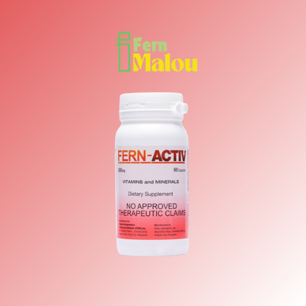
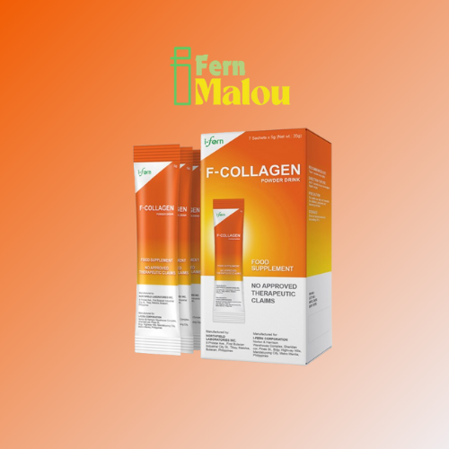
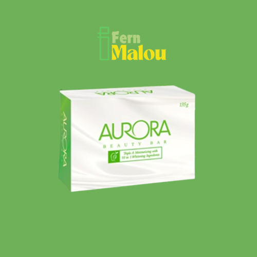

Power Trio Pack #1
Power Trio Pack #2

Fern Activ
MilkCa
Fern-D (60 Softgel Capsules)
Fern-D (120 Softgel Capsules)

Fern-E

F-Collagen
Fern Flex

Fern Coffee

Aurora Beauty Bar Soap

Aurora Hand and Body Lotion
Silver Fresh Toothpaste

Aurora Face Serum
Aurora Eye Cream